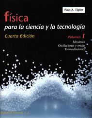

|
 | |
Física, Volumen I
Pocas veces
la rigurosidad y solidez argumental se conjugan con la claridad, la amenidad didáctica
y las modernas tecnologías editoriales. Este es el caso de la nueva edición de
este clásico de la física, respetado -desde su primera edición en 1976- por profesores
y alumnos de la materia en todo el mundo. Los temas de siempre (mecánica, oscilaciones
y ondas, y termodinámica) son acompañados por secciones de formato constante a
lo largo de todo el texto: "Ejemplos", ejercicios resueltos clasificados por su
nivel de dificultad; "Ejemplos. ¡Inténtelo!", desafíos con pistas o ayudas; "Explorando
la naturaleza", breves ensayos que no pertenecen estrictamente al núcleo del curso
pero lo enriquecen.
A la habitual profusión de problemas con respuesta
se suma la diversidad en las modalidades que imponen las necesidades actuales,
pudiendo encontrarse los de elección múltiple, los conceptuales y, por supuesto,
los clásicos. Un infaltable resumen cierra cada capítulo.
El texto se
lee sin recurrir necesariamente al análisis matemático, por lo cual se convierte
en una pieza apetecible para los profesores de nivel secundario que quieran hacer
de sus clases un semillero de mentes universitarias.
Por ello y por su
edición a todo color, con excelentes ilustraciones, el Tipler -cuarta edición-
es una pieza de lujo en la bibliografía básica de la ciencia. |
| | Física,
Volumen I
Cuarta edición
Paul A. Tipler
Barcelona, 1999
Reverté,
720 páginas |
| | | | |
| | | | |
| | | | |
|